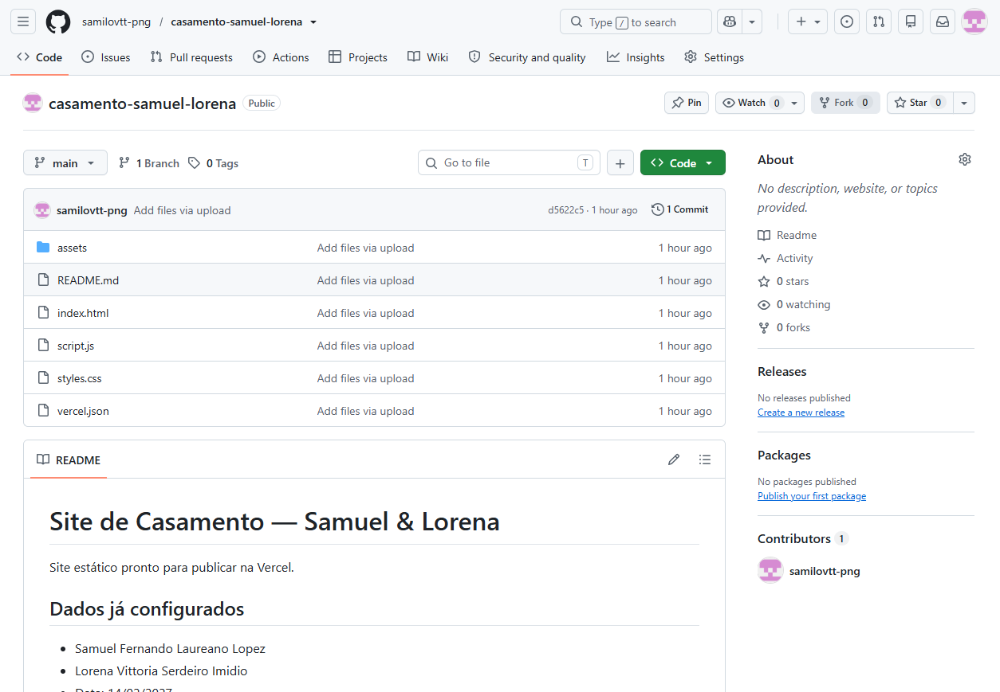
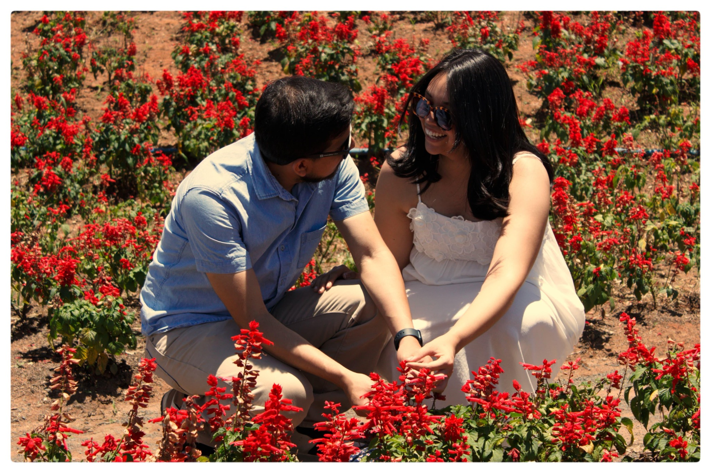
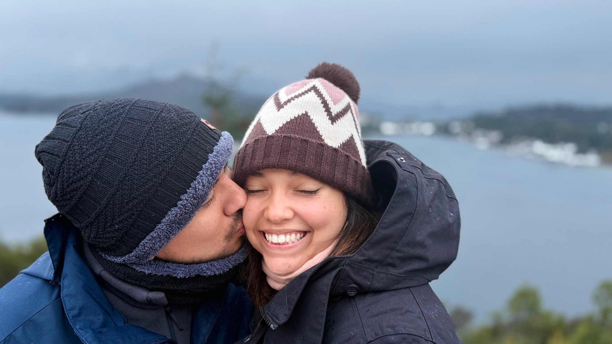
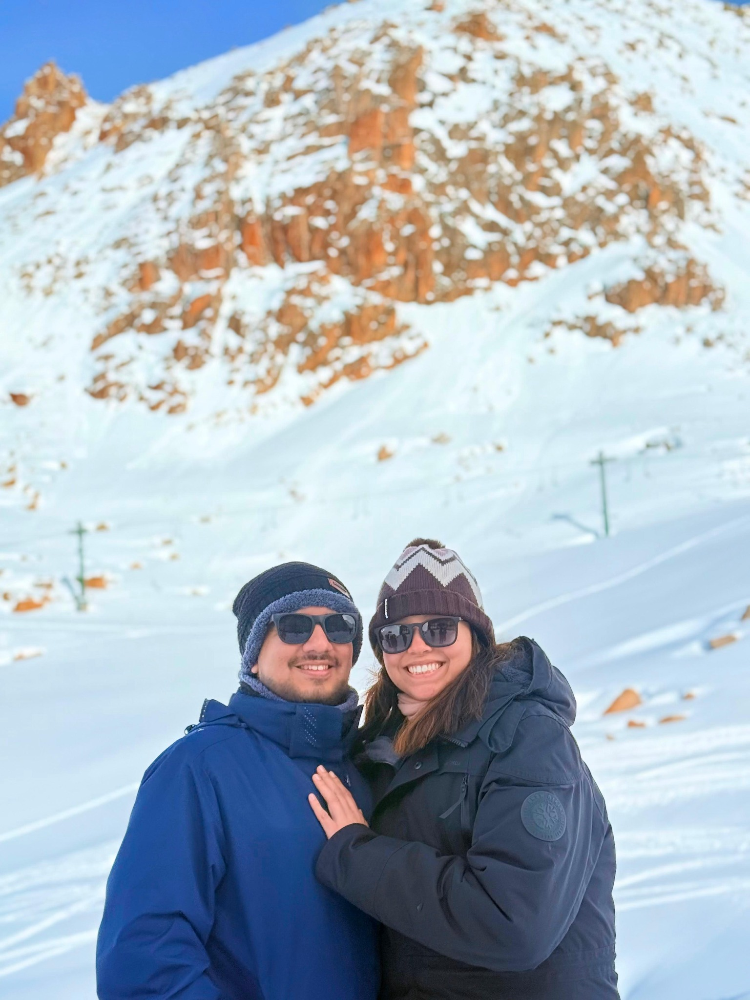
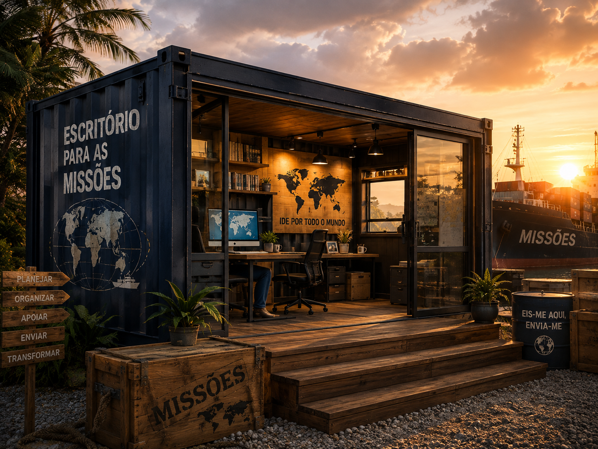
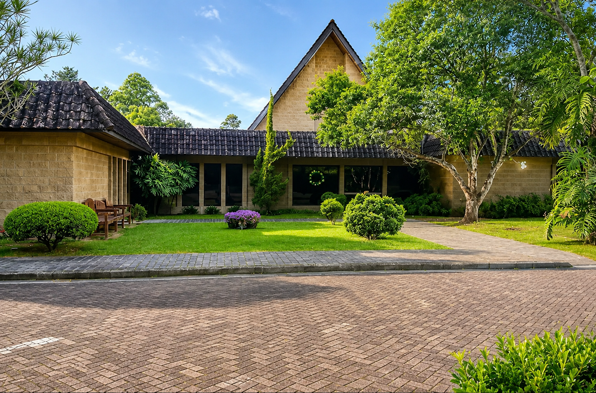
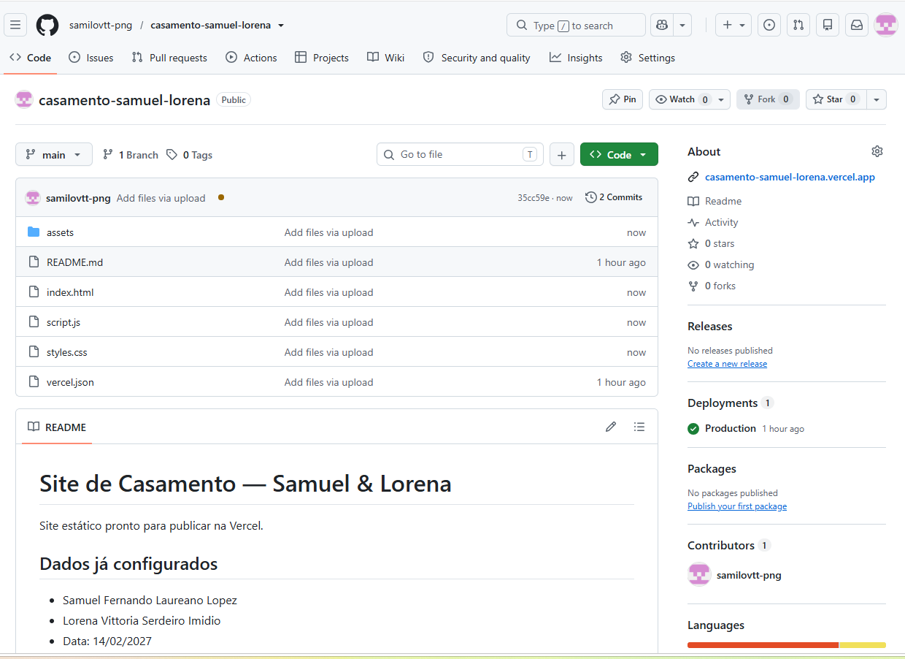
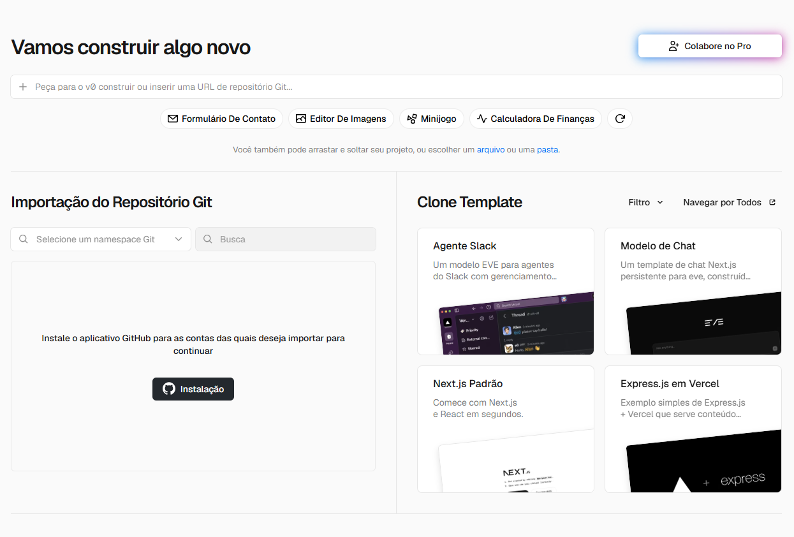

Cerimônia
15h
Estr. José Moura, 1370 - Batistini, São Bernardo do Campo - SP
Ver no Google MapsUnidos pelo amor. Chamados para a missão.
14 · 02 · 2027 — 15hNOSSA HISTÓRIA
Deus já nos levou por muitos caminhos. Agora escolhemos percorrer juntos todos aqueles para onde Ele nos chamar.






O GRANDE DIA

15h
Estr. José Moura, 1370 - Batistini, São Bernardo do Campo - SP
Ver no Google Maps
R. Carlos Olávo Vicentini, 83 - Planalto, São Bernardo do Campo - SP
Ver no Google MapsUM CASAMENTO COM PROPÓSITO
Em vez de presentes para nós, escolhemos transformar este momento em esperança.




CONFIRMAÇÃO DE PRESENÇA